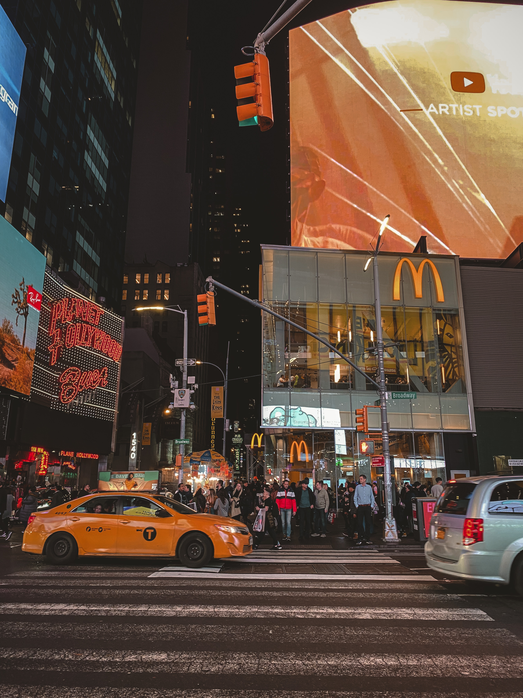
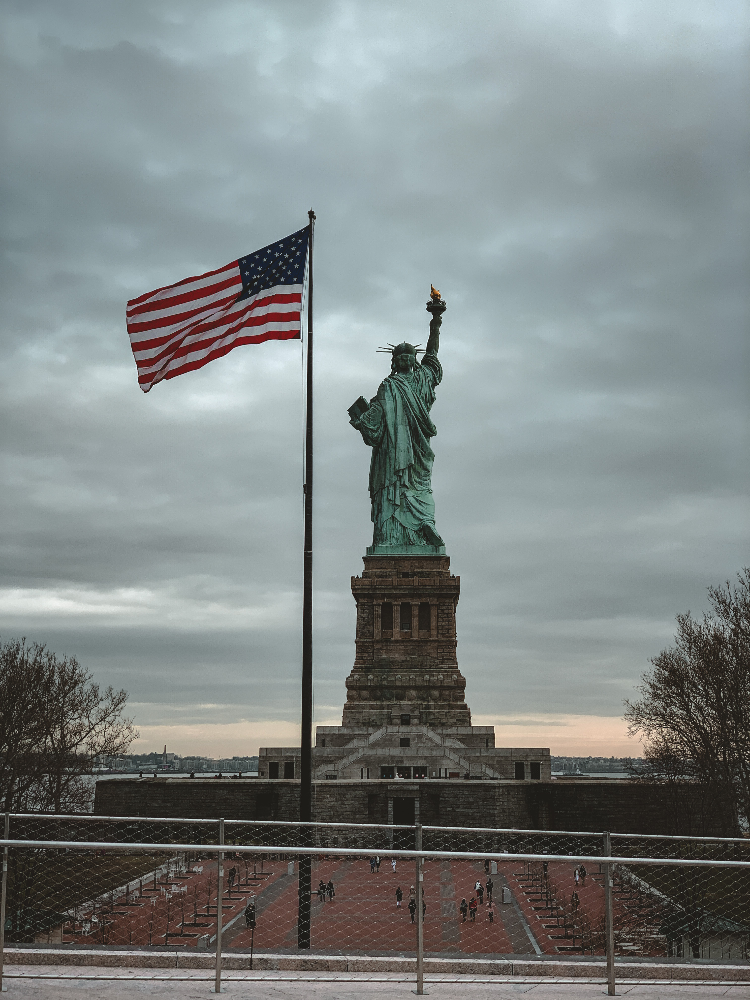
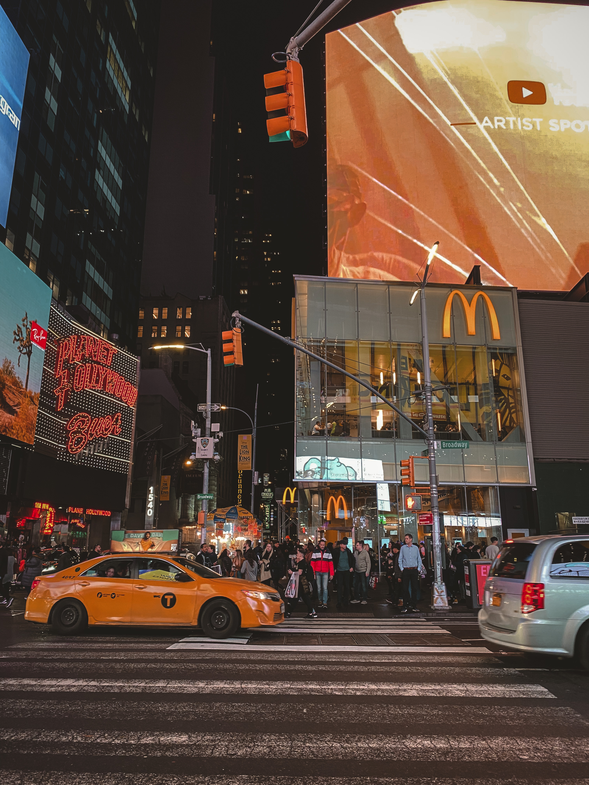
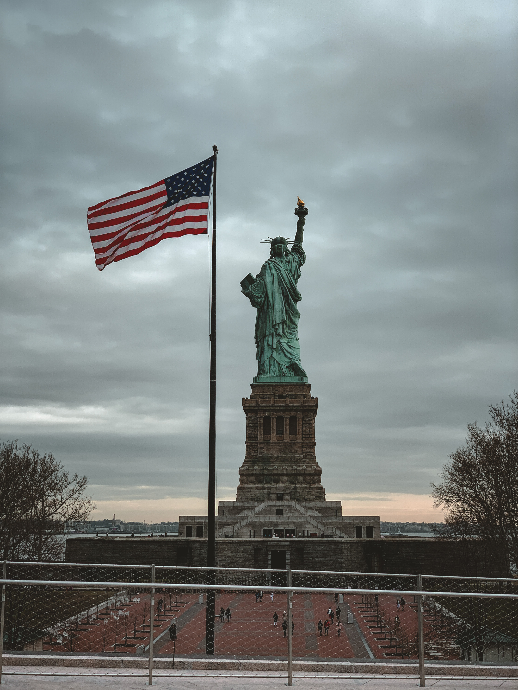
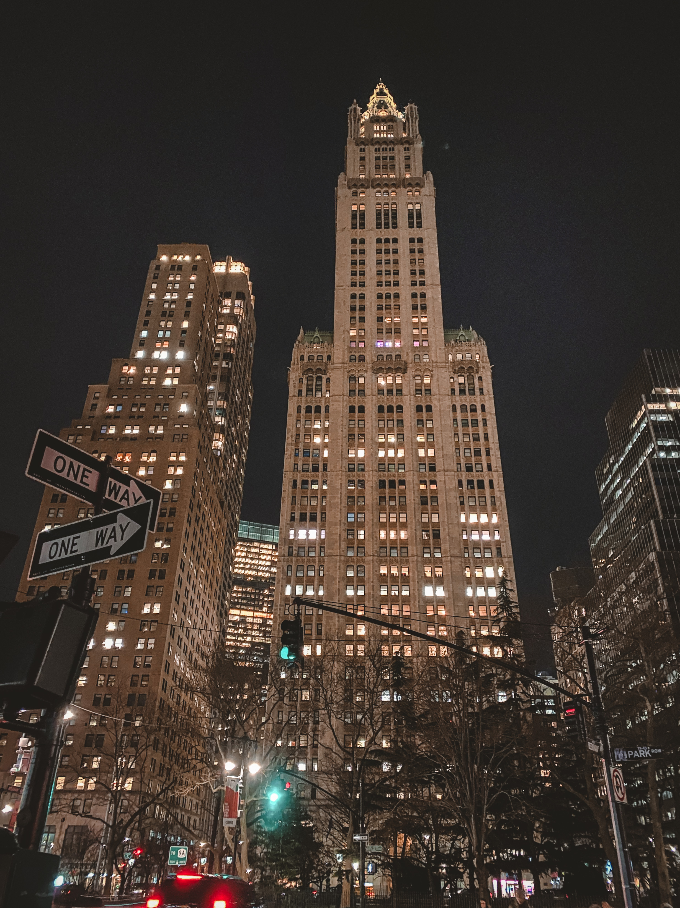
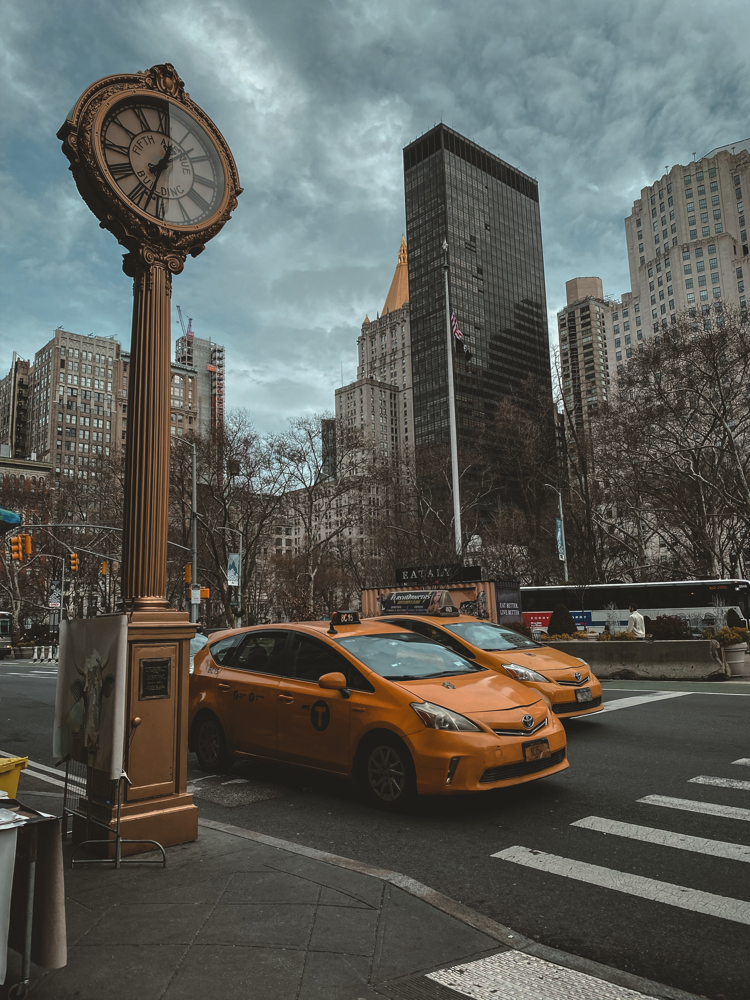
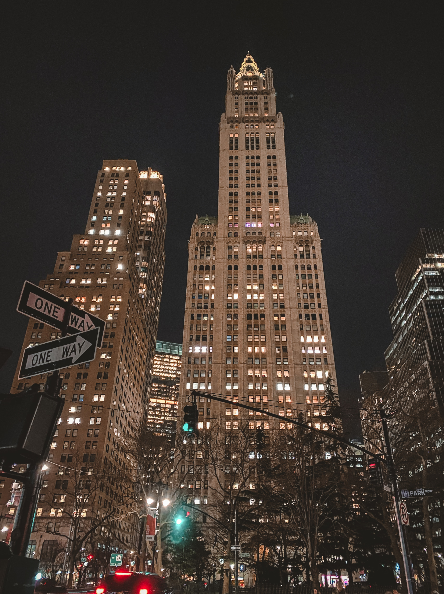
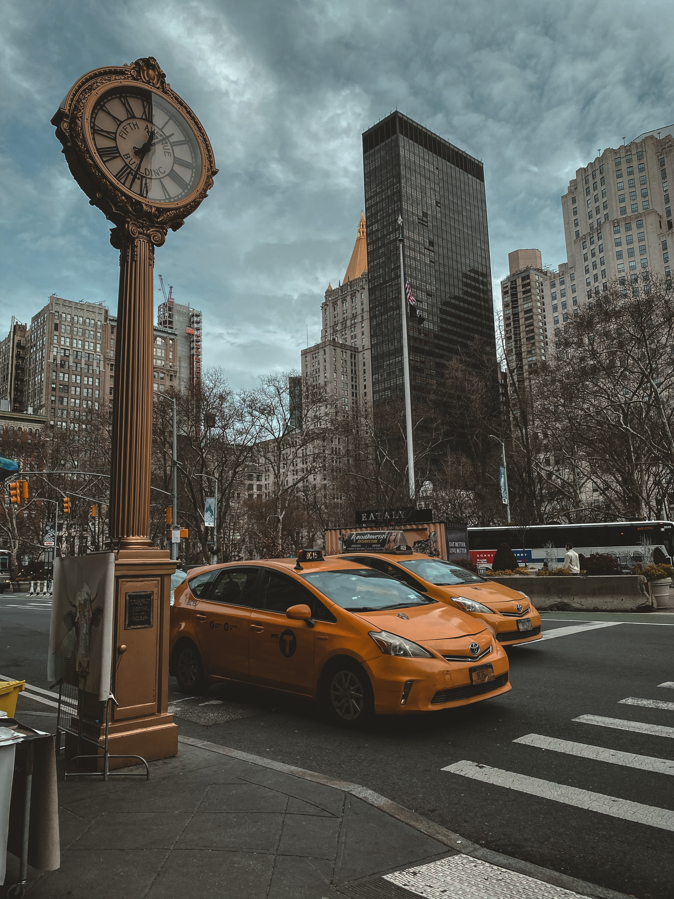

“Photography is a way of feeling, of touching, of loving. What you have caught on film is captured forever… It remembers little things, long after you have forgotten everything.”
| The Vessel | Statue of Liberty | Brooklyn Bridge | Empire State View |

Además de estar a la merced del sol, la lluvia y el frío de las noches,
un perro callejero pasa hambre y sed al no tener un plato de comida y agua limpia disponibles.
Están expuestos a enfermedades, al maltrato por las personas, a causar o ser víctimas de accidentes.
 




 


